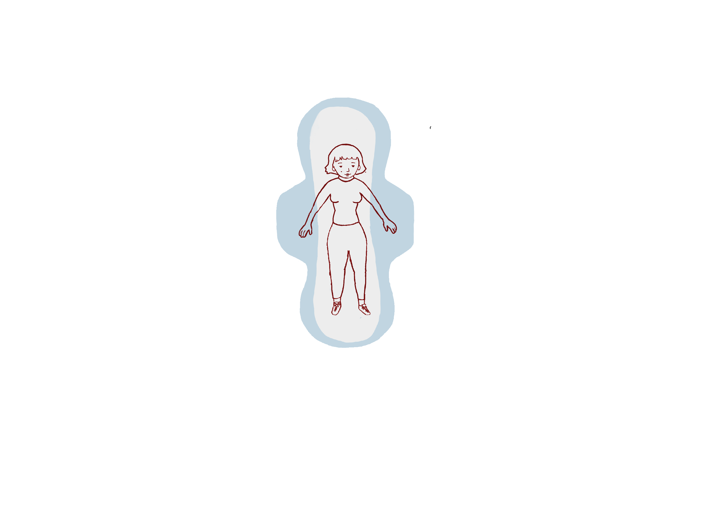
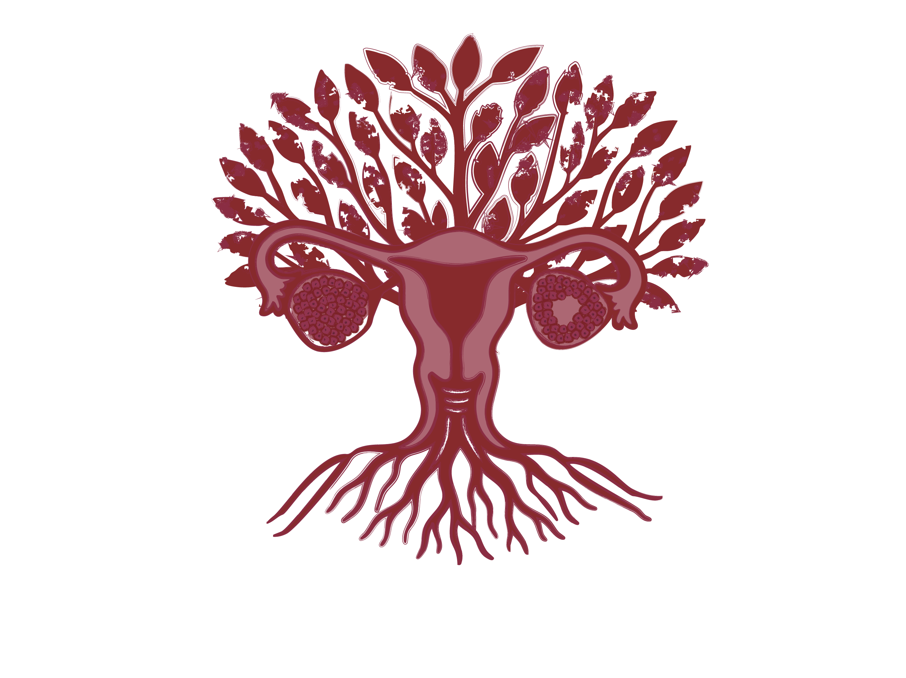
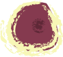

HORMON-NIVEAU
FSH
LH
ØSTROGEN
PROGESTERON
TESTOSTERON

Scene 0: Intro
←
→
Velkommen til rejsen igennem follikelfasen.
Scroll til højre for at begynde.
JEG ER DEJLIG
|


Tryk
se folliklen vokse
Gå til næste fase:
Ægløsningsfasen